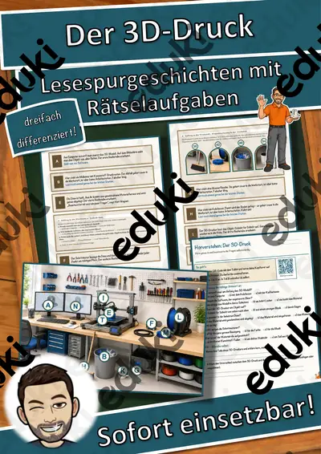
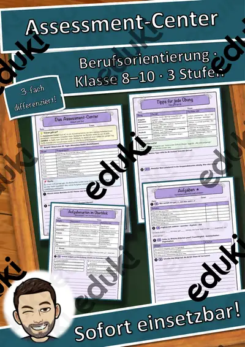

Lesespur: Wettkampf und Nervosität: mit Druck umgehen – Lesespurgeschichte mit Rätseln (Klasse 9)
Wettkampf und Nervosität – mit Druck umgehen – Lesespurgeschichte Sport (Klasse 9)Begib dich mit deiner Klasse auf eine spannende Lesespur durch das Leichtathletikstadion! Selma und Kerem starten bei der Kreismeisterschaft – und sind furchtbar aufgeregt. An der Startnummernausgabe erfahren sie, warum das Herz vor einem Wettkampf rast, in der Aufwärmzone, warum eine feste Routine Sicherheit gibt. In der Atemecke lernen sie die beruhigende Bauchatmung, im Ruheraum die Visualisierung, an der Teambank die Kraft positiver Selbstgespräche. Im Callroom konzentriert sich Selma nur auf ihre eigene Aufgabe, am Startblock auf ein einziges Schlüsselwort, an der Ziellinie lernt sie mit dem Ergebnis umzugehen – und im Trainerzelt setzt sie sich ein neues, kluges Ziel. Ihr Maskottchen, der Turnschuh Flitz, ist immer dabei. Am Ende jedes Abschnitts verrät ein Hinweis den nächsten Ort auf dem Plan – nur wer genau liest, findet den Weg und sammelt alle geheimen Buchstaben zum Lösungswort.
Die perfekte Lesespur für den SPORTUNTERRICHT der 9. Klasse – ideal vor Wettkämpfen, Bundesjugendspielen oder Sportprüfungen und übertragbar auf Prüfungsangst in allen Fächern: Sie verbindet sinnentnehmendes Lesen mit alltagstauglichen Strategien gegen Nervosität. Das Material ist SOFORT EINSETZBAR und in DREI DIFFERENZIERUNGSSTUFEN (leicht ★ / mittel ★★ / schwer ★★★) angelegt.WICHTIG: Das komplette Material ist sowohl in FARBE als auch in SCHWARZ-WEISS enthalten – ideal zum Sparen von Druckkosten.DAS IST ENTHALTEN
- Lesespurgeschichte in 3 Niveaus (leicht, mittel, schwer)
- farbiger Stadionplan als Suchkarte
- Hörverstehen mit QR-Code zur MP3 (selbstständiges Hören mit Kopfhörern)
- vier Aufträge auf dem Weg: ein Quiz, eine Zuordnung, eine Rechenaufgabe und ein Steckbrief
- Rätselseite (Wörter-Suchsel + Fragen)
- Ausmalbild zum Thema (Konzentration im Startblock)
- ausführliches Lösungsblatt für die Lehrkraft
- alles zusätzlich als komplette Schwarz-Weiß-VarianteSO GEHT DIE LESESPURDie Jugendlichen lesen ab START, finden im Text den nächsten Ort, suchen ihn auf dem Plan und lesen bei dieser Station weiter. An jeder richtigen Station gibt es einen Buchstaben. Eingebaute Sackgassen (Tribüne, Imbisswagen, Duschhaus, Materialschuppen) sind keine Stationen und dienen der Selbstkontrolle. Am Ende werden die gesammelten Buchstaben umgestellt und ergeben ein geheimes Lösungswort. (Die Lösungen sind selbstverständlich nur im Lösungsblatt für die Lehrkraft enthalten.)INHALTLICHER SCHWERPUNKTDie Jugendlichen verstehen Anspannung als normale Körperreaktion, lernen Strategien wie Routine, Bauchatmung, Visualisierung, positive Selbstgespräche und Fokussierung kennen und reflektieren den Umgang mit Erfolg, Misserfolg und realistischen Zielen.ABGEDECKTER LEHRPLAN (Klasse 9, Sport)
- Sport (LehrplanPLUS Bayern) – Jahrgangsstufe 9 „Gesundheit und Fitness“ / „Leisten, Wettkampf“: Wettkampfsituationen bewältigen, Strategien gegen Nervosität anwenden, mit Erfolg und Misserfolg umgehen, Ziele setzen.
- Deutsch – Lesen: Sachtexten gezielt Informationen entnehmen; Zuhören: einem Sachhörtext folgen (Hörverstehen mit MP3).
- Mathematik – Addition, Prozentrechnung, Terme.
- Fächerübergreifend / Kompetenzen: Biologie (Hormone, Nervensystem), Persönlichkeitsentwicklung, Prüfungsvorbereitung, genaues Lesen und Prüfen, kreatives Gestalten (Ausmalbild).
Geeignet für Freiarbeit, Stationenlernen, Vertretungsstunden, Wochenplan, Projekttage und Distanzunterricht. Klassenstufe 9.
Ähnliche Materialien

Mit Konflikten umgehen - Konfliktlösung (Tafelmaterial) - Konfliktlöser

3D-Druck Lückentext mit Wortspeicher Hörverstehen und Suchsel

Lesespur: Der 3D-Druck: In der Technik-Werkstatt – Lesespurgeschichte mit Rätseln (Klasse 9)

Lesespur: Sport und Ernährung: Energie fürs Training – Lesespurgeschichte mit Rätseln (Klasse 9)

Lesespur: Das Herz – Lesespurgeschichte mit Rätseln (Klasse 8)

Der Druck – Prüfungstraining Physik (Klasse 8)

Herz Lückentext mit Wortspeicher Hörverstehen und Suchsel
